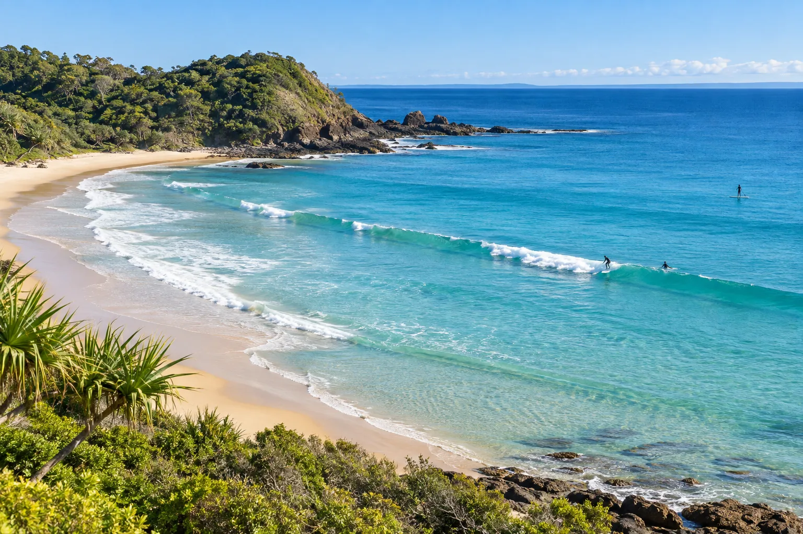

Byron Bay — The Pass
Australie · surf, paddle, baignade, snorkeling

Une droite longue et douce qui contourne le point le plus à l'est de l'Australie. Vague de longboard par excellence ; dauphins et tortues au line-up.
- Lieu
- Australie
- Niveau
- Débutant
- Activités
- surf, paddle, baignade, snorkeling
- Type d'eau
- Mer / océan
- Coordonnées
- -28.64, 153.62 (position approximative du secteur)
Dangers à connaître
- Extrêmement fréquentée toute l'année.
- Courant qui pousse vers l'intérieur de la baie.
- Rochers affleurants près de la pointe.
Le conseil d'Ocean Buddy
Marche jusqu'au bout du sentier et entre à la pointe : ramer depuis la plage est long.
Ouvrir dans Ocean Buddy Télécharger sur l'App Store
Source : Description historique Ocean Buddy · vérification externe en attente.